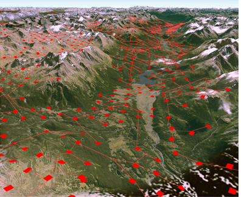

One Year Left to Kick Shell Out for Good
Sacred Headwaters today: natural beauty abounds |
High in the alpine meadows of northwest British Columbia, lies the Sacred Headwaters, the shared birthplace of three of North America's greatest wild salmon rivers--the Skeena, Stikine and Nass. This vast, pristine landscape, territory of the Tahltan First Nation, is home to rich populations of grizzly bears, caribou and mountain goats.
|  |
...Shell's plan could devastate the Sacred Headwaters
|
It is a paradise in peril.
Can you help keep the Sacred Headwaters
sacred, not scarred?
Shell plans to extract gas from the Sacred Headwaters using hydraulic fracturing, aka fracking, a destructive process that would transform the alpine basin into an industrial nightmare of gas wells and roads, destroying wildlife habitat and polluting streams. This poses a direct threat to wild salmon, wildlife and the culture and livelihoods of First Nations and other downstream communities.
With one year before a government-imposed moratorium on drilling expires, ForestEthics is working with more than 60,000 supporters (and counting) to pressure Shell to get out of the Sacred Headwaters, and for the BC government to permanently protect this sacred place.
With your help, we can get Shell out of the Sacred Headwaters for good.